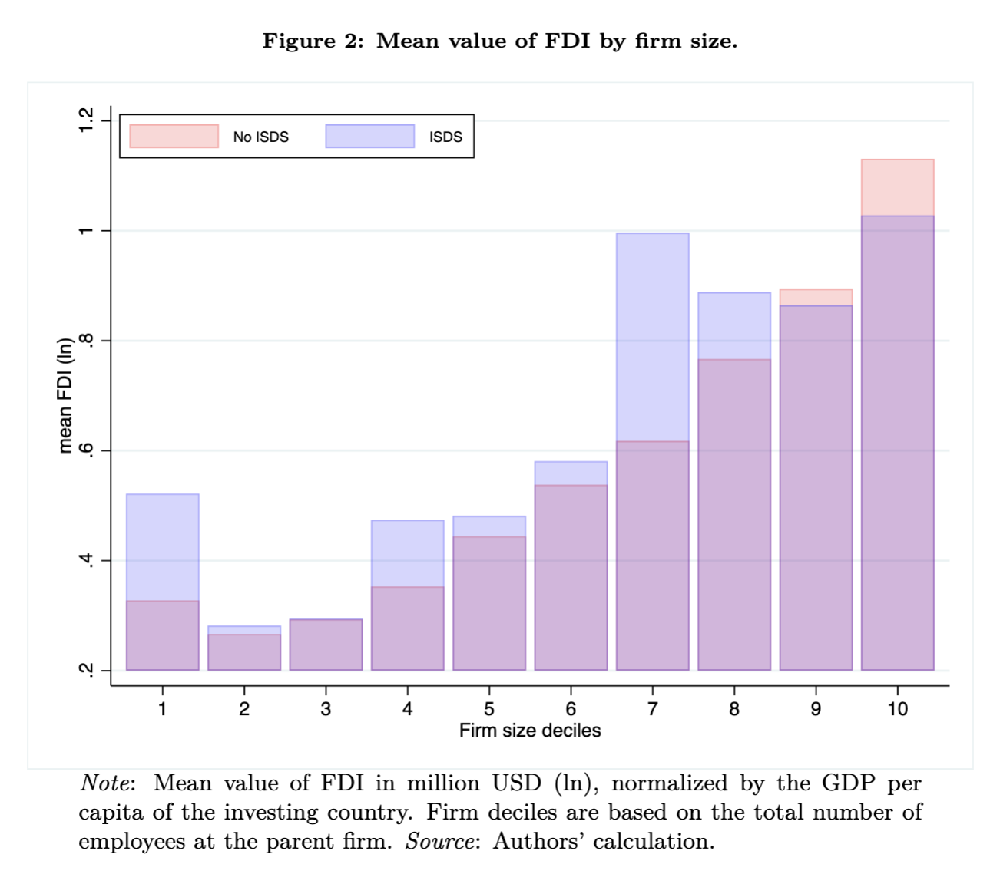
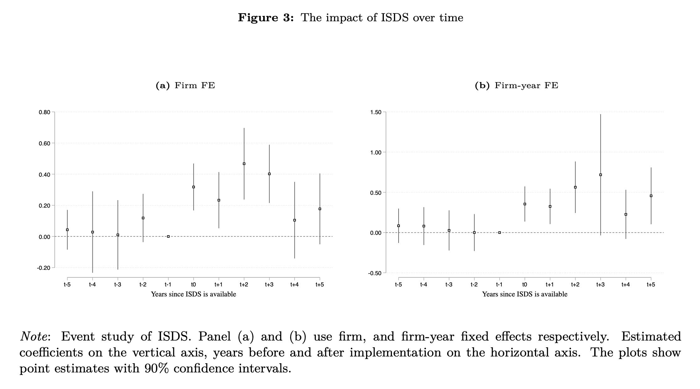

Current research projects
Investor-state dispute settlement mechanism and firms' FDI, Job Market paper
Read abstract
Abstract: This paper examines how investor-state dispute settlement mechanisms (ISDS) influence firm foreign direct investment (FDI) by reducing policy uncertainty. Constructing a unique dataset on firm-level FDI, which includes 105,615 parent firms from 130 countries of origin between 2000 and 2021, we demonstrate that ISDS increases the probability of first entry by 1.5% at the aggregate level. This finding is robust to endogeneity concerns, employing an inverse propensity weighting strategy and an instrumental variable approach. At the firm level, ISDS boosts the stock of foreign direct investment in subsidiary firms located in countries that are members of the agreement by 29%. Notably, we show that ISDS has an even greater positive effect on investment during periods of high policy uncertainty, as indicated by election timing. Our results remain robust when controlling for the depth of regional trade agreements (RTAs) as well as other provisions. Consistent with model predictions, we also reveal that the largest firms benefit the most from ISDS mechanisms, given their ability to absorb the costs of filing a claim.
LSEG Data extraction code example


Deep Integration in Sub-Saharan Africa: How Much Can PTAs
Contribute to Regional Integration and How?, joint with L.Fontagné, J-C. Maur, N. Rocha & G.Santoni
Read abstract
Abstract: This paper identifies the role of the African Continental Free Trade Agreement in the economic integration of Sub-Saharan African economies (SSA). First, it indicates that the effect of PTAs on trade for SSA economies is lower relative to other regions, possibly due to the nature and content of their PTAs. Indeed, SSA PTAs are of medium/low ambition, as classified with the PTA clustering algorithm developed in the paper. However, the African Continental Free Trade Agreement (AfCFTA) which entered into force in 2019 has harmonized existing trade agreements under a single, comprehensive mega-regional trade agreement. While it is currently classified as a Medium PTA, the question arises as to whether deepening its policy areas would further strengthen the integration of Sub-Saharan African (SSA) economies, thus improving overall welfare. To do so, we provide a General Equilibrium counterfactual analysis in which the AfCFTA is deepened (i.e. a switch from its current ambition to a 'Deep' trade agreement). Results indicate quite substantial welfare gains from trade in such a scenario, with a 0.6\% welfare gains on average. Finally, the paper proposes targeted policy recommendations on how to deepen this agreement, and discusses on its implications and its practicability.
Bilateral trade exposure and Deep PTA, joint with N. Rocha
Read abstract
Abstract: Over the past two decades, the surge in global preferential trade agreements (PTAs) has paralleled the trend of increasing globalization. While existing studies have broadly examined the general role of PTAs, their determinants, especially amid growing complex value chains, have been insufficiently investigated. This paper offers a more comprehensive understanding of the forces influencing the signature of trade agreements and their types. The paper classifies agreements into three different types, depending on the frequency of legally enforceable provisions they include: WTO+, agreements covering WTO disciplines; WTO-X (Core provisions), agreements going beyond WTO disciplines and covering areas such as Competition policy, Investment, IP rights, and Capital movement provisions; and Progressive, agreements covering areas beyond trade such as environment, labor, and visa regulation. The paper explores how different types of risk shape import-exposed countries' decisions to sign these agreements. Results highlight that the more exposed a country is vis-à-vis a partner in terms of intermediary inputs, the more likely it is to sign an agreement. This probability is higher for Progressive agreements compared to WTO-X or WTO+ . Specifically, a 10% increase in the import exposure index increases the probability of signing a Progressive agreement by 1%. The overall impact of exposure on PTA signing is magnified when the sourcing country is considered politically unstable or prone to military conflicts or climate events.
Import Competition and Outsourcing to Individual Workers, joint with R. Loubes
Read abstract
Abstract: Firms facing higher import competition resort to adaptive strategies to maintain competitiveness.
While previous literature focused on general labor effects and reallocation,
little is known about self-employed workers. This paper aims to study import competition
and outsourcing to solo self-employed. At the aggregate level (EU - NUTS) our preliminary
findings reveal that regions facing intensified import competition from China exhibit higher
self-employed workers relative to their total workforce, controlling for country, region, and
industry characteristics. The next step is to disentangle whether firms are indeed replacing
traditional employees with solo self-employed when facing financial hardship, using French administrative data.